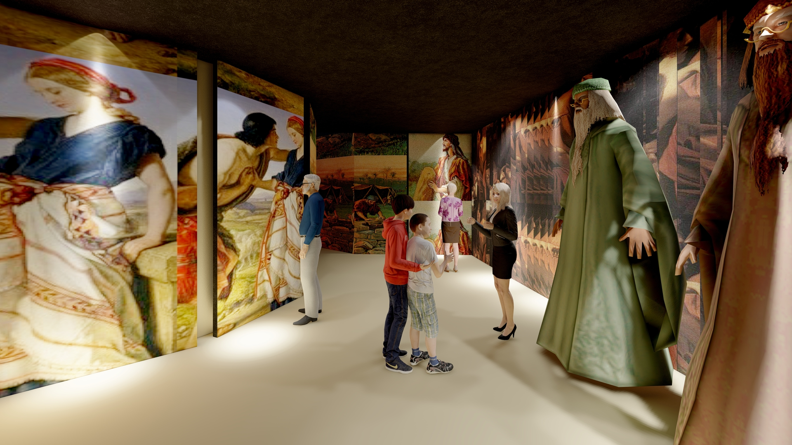

Project Summary
The Centre for Theology is an architectural thesis project that proposes a comprehensive theological campus weaving together spaces for worship, learning, accommodation, and cultural reflection. The design is organised around a series of interconnected programmatic blocks, each with its own spatial identity while contributing to a unified whole.
The programme includes a biblical narrative museum guiding visitors through Creation, Genesis, Exodus, and the New Testament; a chapel for contemplative worship; an academic block; student accommodation; an auditorium; and a theology block with prayer and classroom spaces.
Visualizations

Museum — Creation

Museum — Genesis

Museum — Exodus

Chapel — Interior

Academic Block

Accommodation Block
.png)
Auditorium

Theology Block
Concept & Design
Museum — Biblical Narrative
.jpg)
Exodus (2)

New Testament

Dining Space
Academic Block

Central Open Prayer Area

Triangle Interaction Space

Auditorium — Interior
Accommodation Block

Central Courtyard

Student Dorm

Theology Block — Classroom